Dive the legendary German High Seas Fleet from Stromness, Orkney. Two decades of wreck diving expertise aboard MV Jean Elaine and MV Sharon Rose.
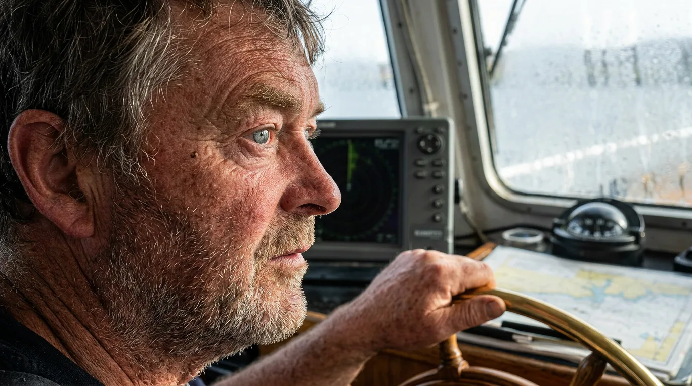
Scapa Flow Charters has been providing diving charters in Scapa Flow, Orkney's North Isles, Shetland, East and West coast of Scotland including Wick and St Kilda for nearly 20 years.
Andy is an experienced boatman and diver with a vast knowledge of the history and location of wrecks. He is a DoT/RYA certified skipper with HSE, IANTD and sport diving qualifications. If there are any questions, just ask him.
Scapa Flow has opened up access to some fantastic wreck diving and scenic diving in the clean waters and unspoilt environment of Scotland's Northern Isles.
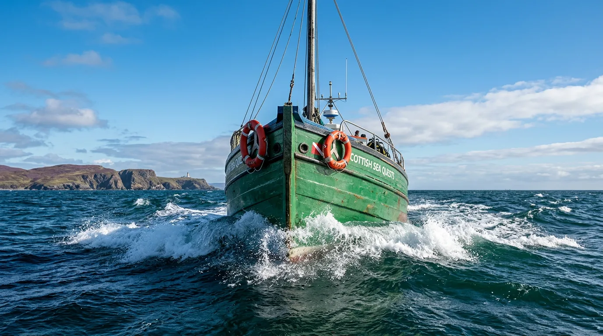
A large and stable diving platform, fully fitted as a self-catering liveaboard charterboat sleeping twelve divers in comfort. Spacious saloon, copious deck space and a drying/changing room makes kitting up that much more comfortable.
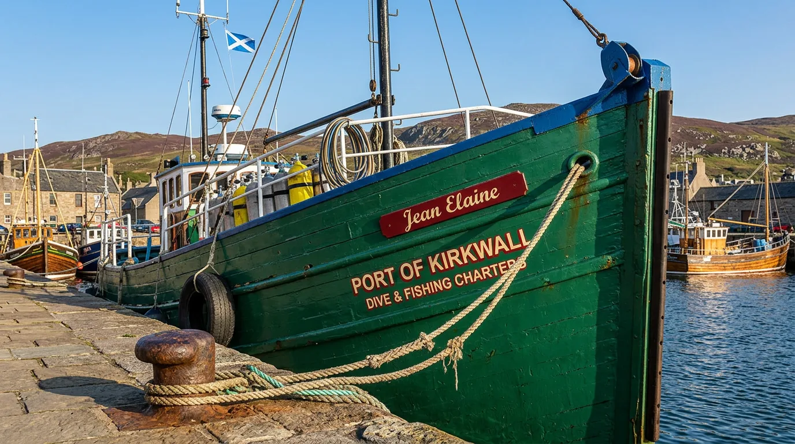
Our second vessel extends our capacity and flexibility. Both boats share the same high standards of safety equipment and diving facilities, with a large fully fitted saloon, connecting galley, and comprehensive navigation systems.
Diving destinations include the world famous Scapa Flow with the remains of the German High Seas Fleet. Other locations include the Orkney North Isles, Wick, Sule Skerry, St Kilda, Shetland, Foula and Fair Isle.
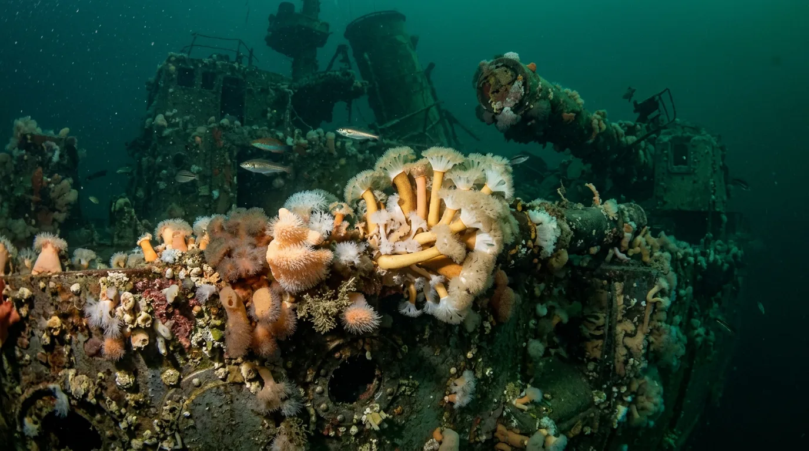
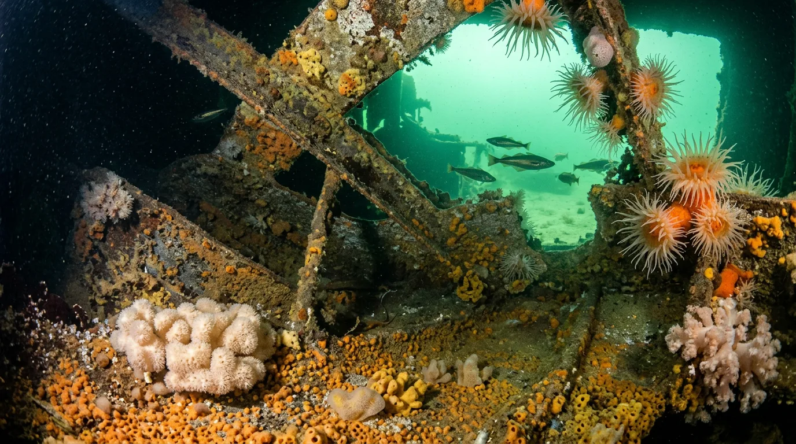
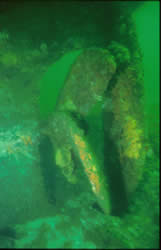
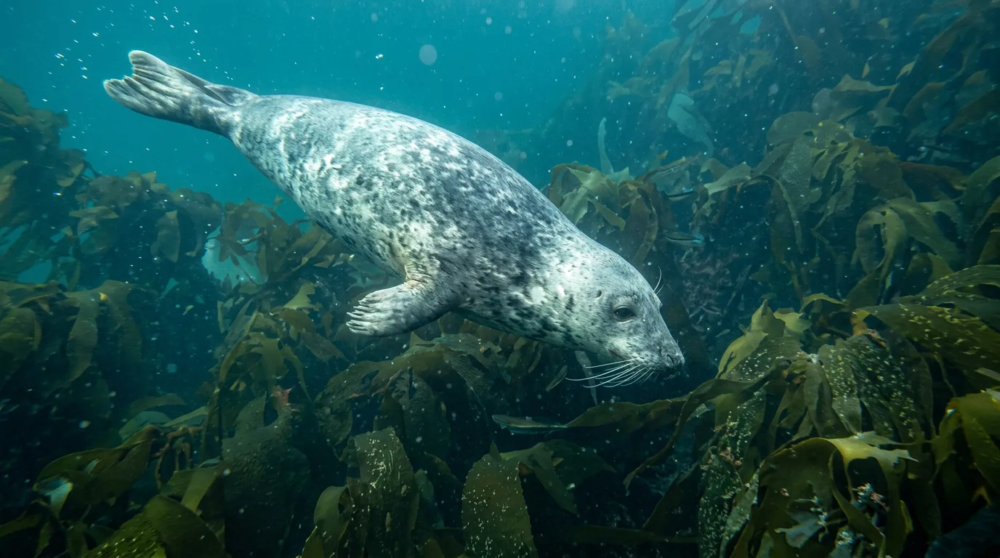
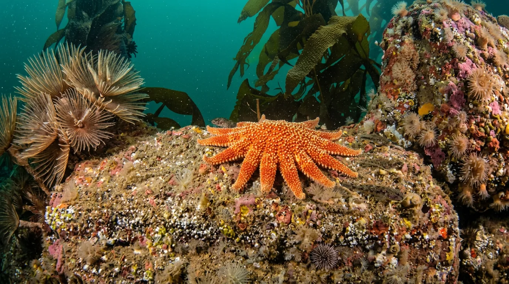
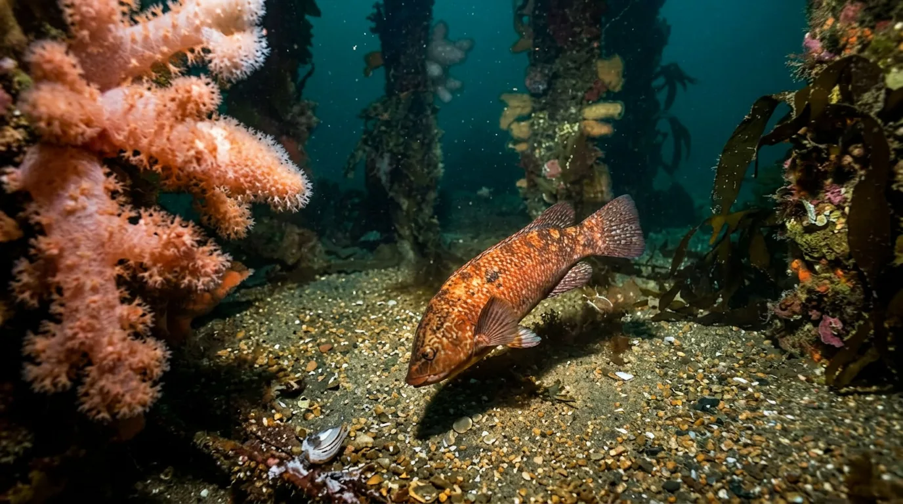
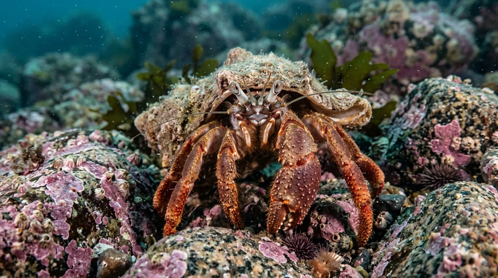
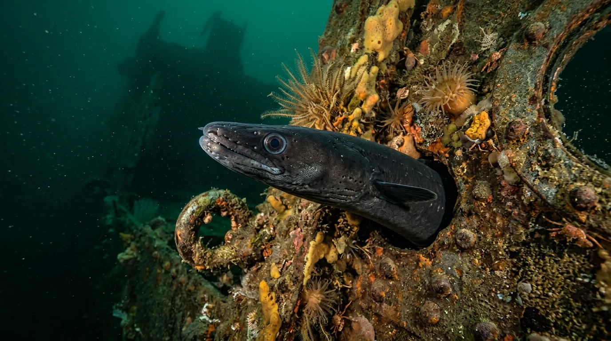
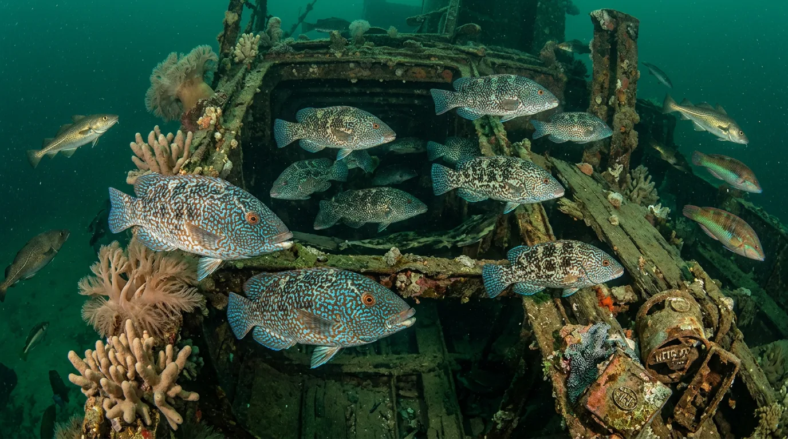
The usual boat charter runs from Saturday to the following Saturday. Diving starts on Sunday through to Friday — two dives a day with air included. We can also arrange longer or shorter dive times, and long weekends.
If you prefer not to live aboard, Scapa Flow Charters can help arrange shore-based accommodation. While on the boat you enjoy the added convenience and luxury a liveaboard can offer.
Included in the price: lead weights, 12 & 15 litre 232-bar cylinders, and air fills from our twin independent compressors. Nitrox and other gases available on request.